Освоить базовые методы вероятностного моделирования случайных процессов в контексте кибербезопасности на примере моделирования потока атак на веб-сервер.
Реализовать симуляцию пуассоновского потока атак.
Выполнить статистический анализ результатов:
Исследовать сходимость оценки вероятности от объёма выборки.
Провести параметрическое исследование по λ.
Преобразовать код в литературный стиль и сгенерировать производные форматы.
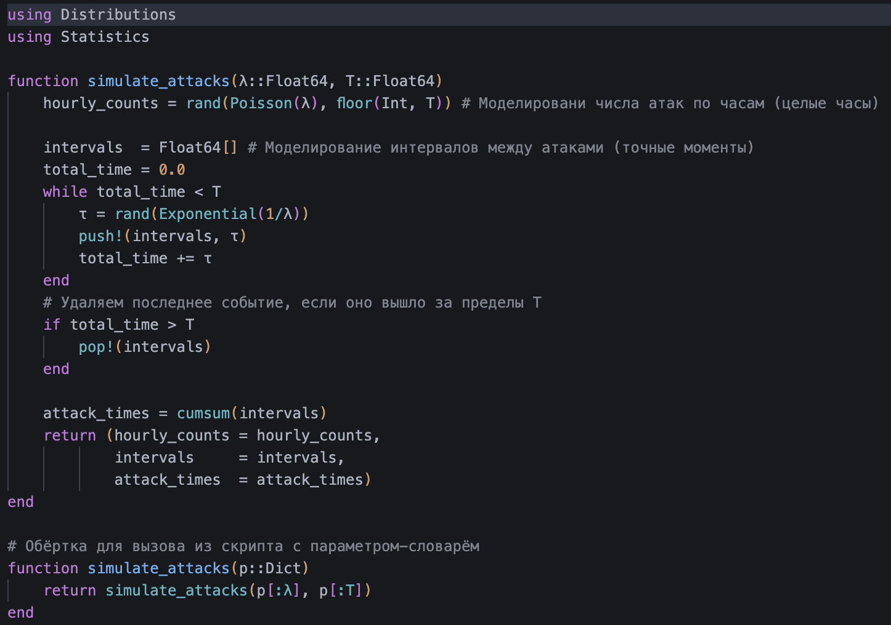
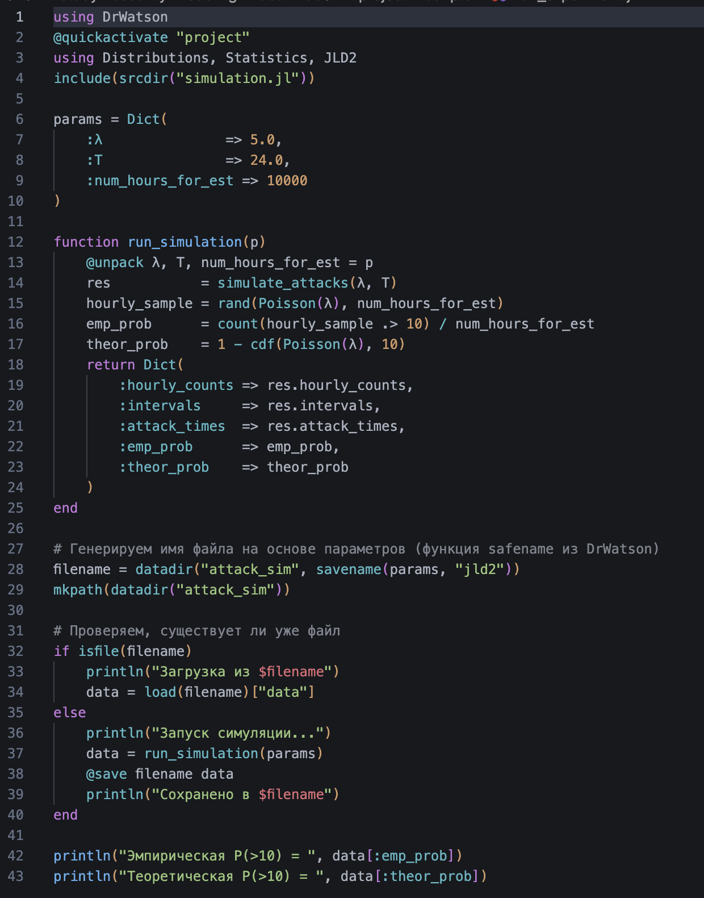
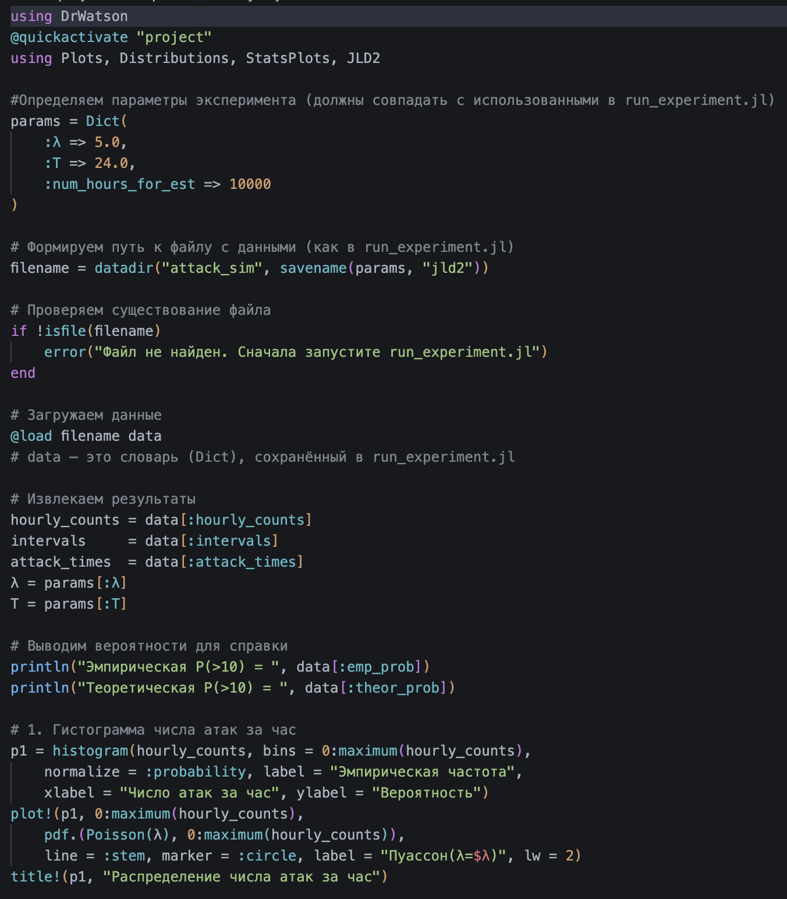
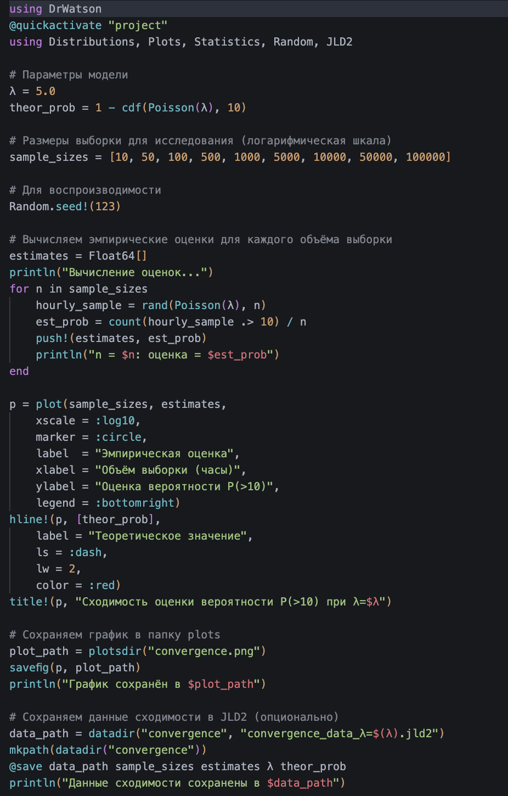
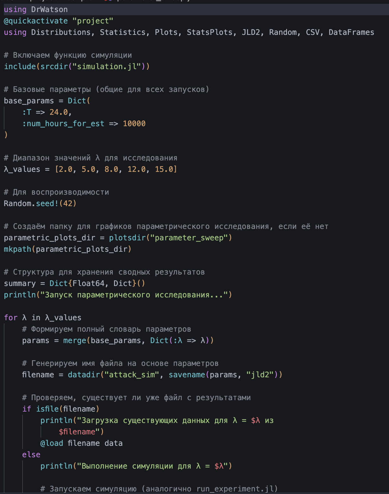
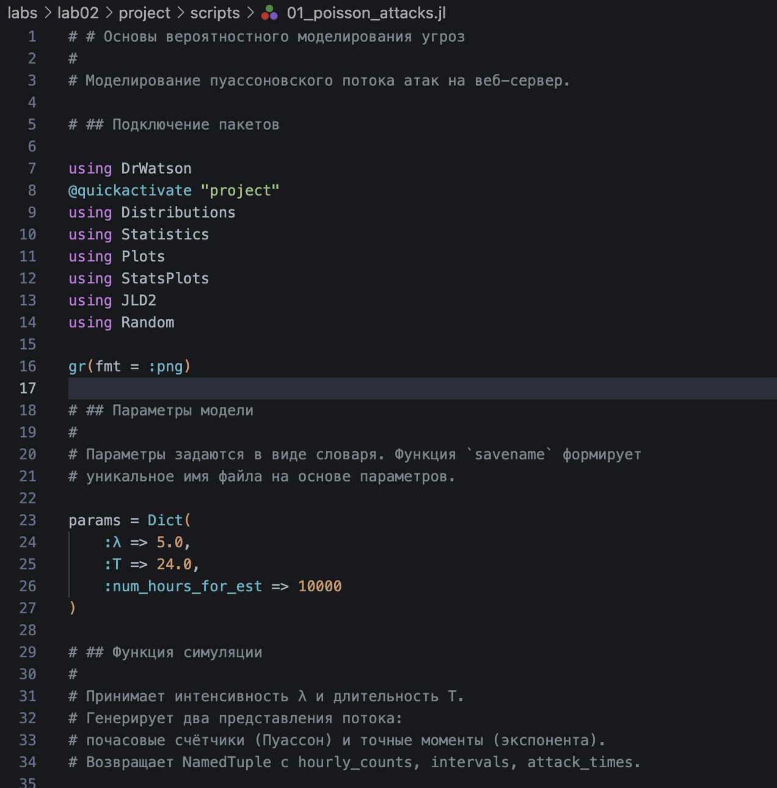
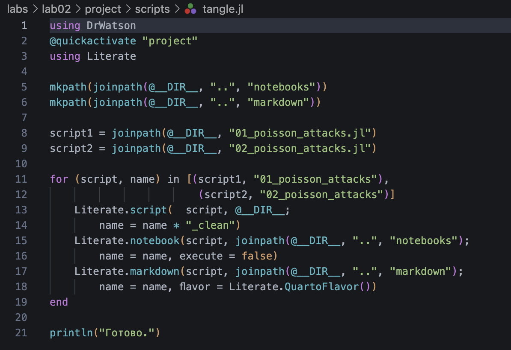
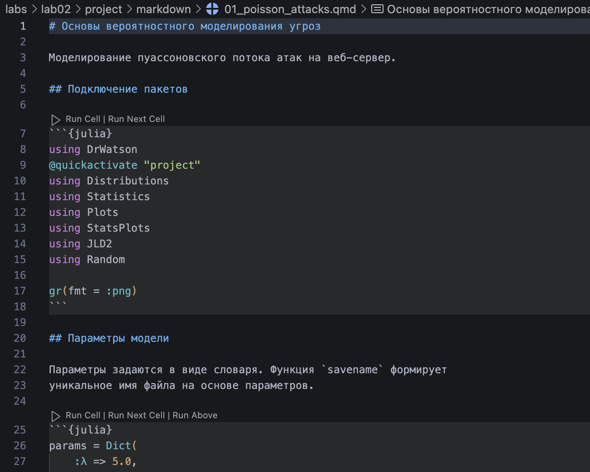
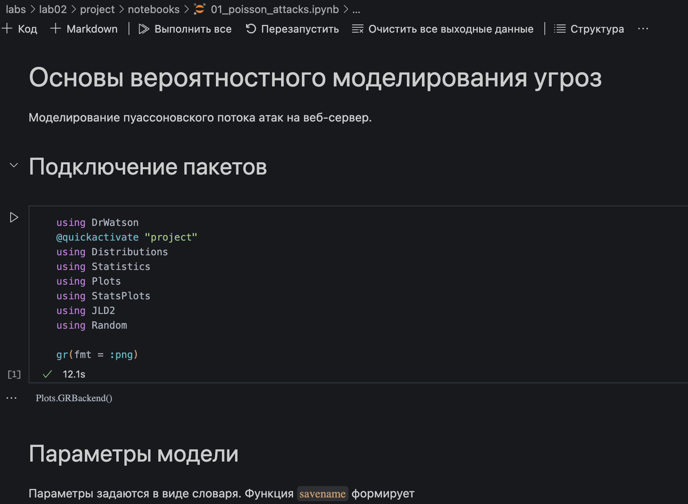
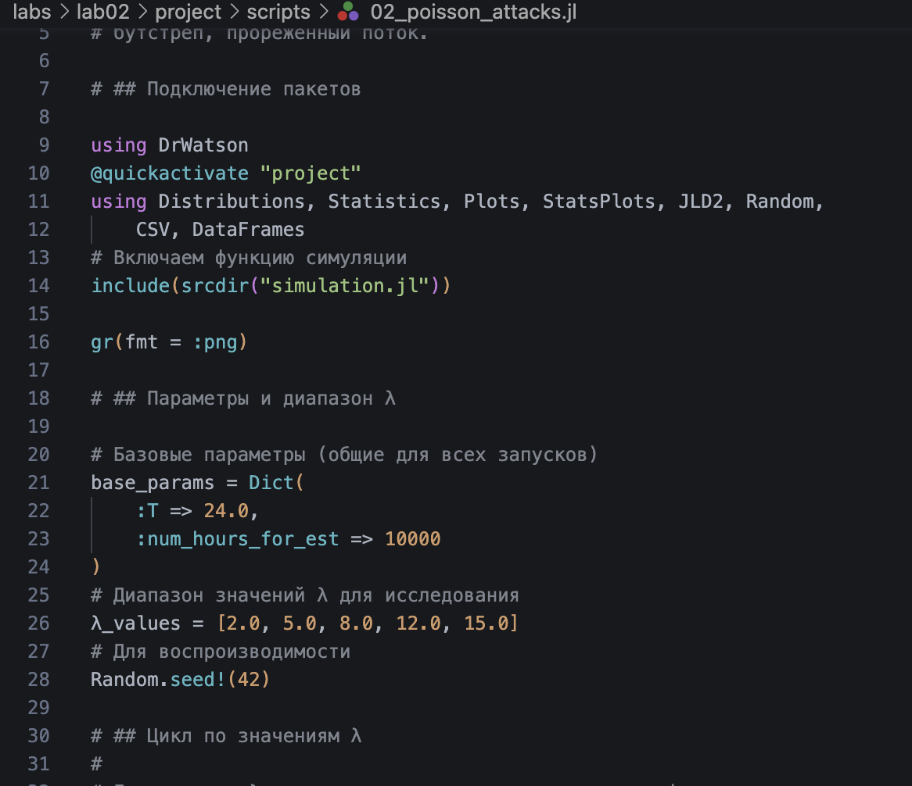
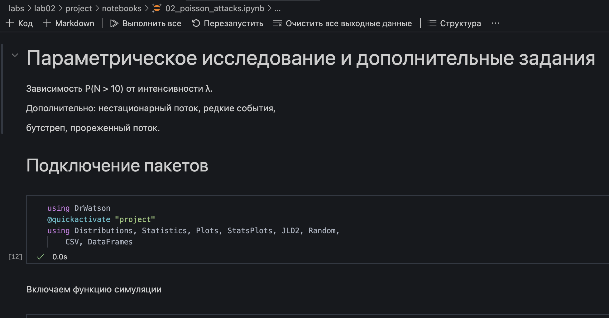
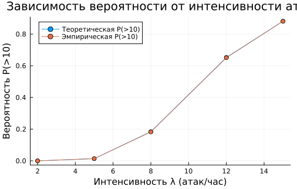
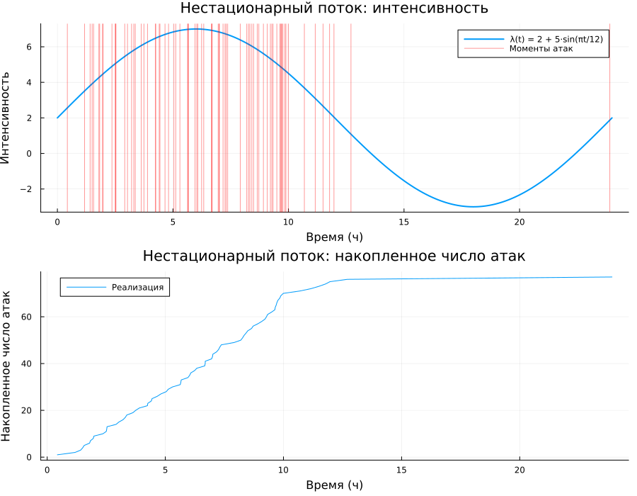
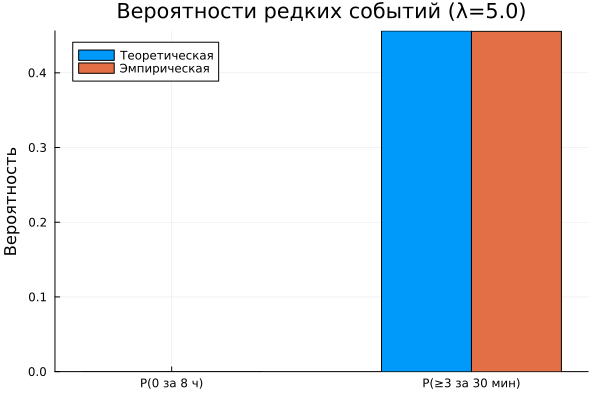
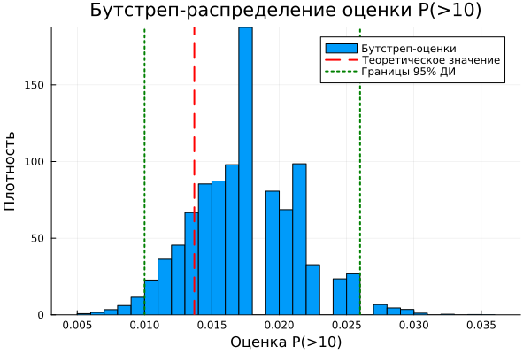
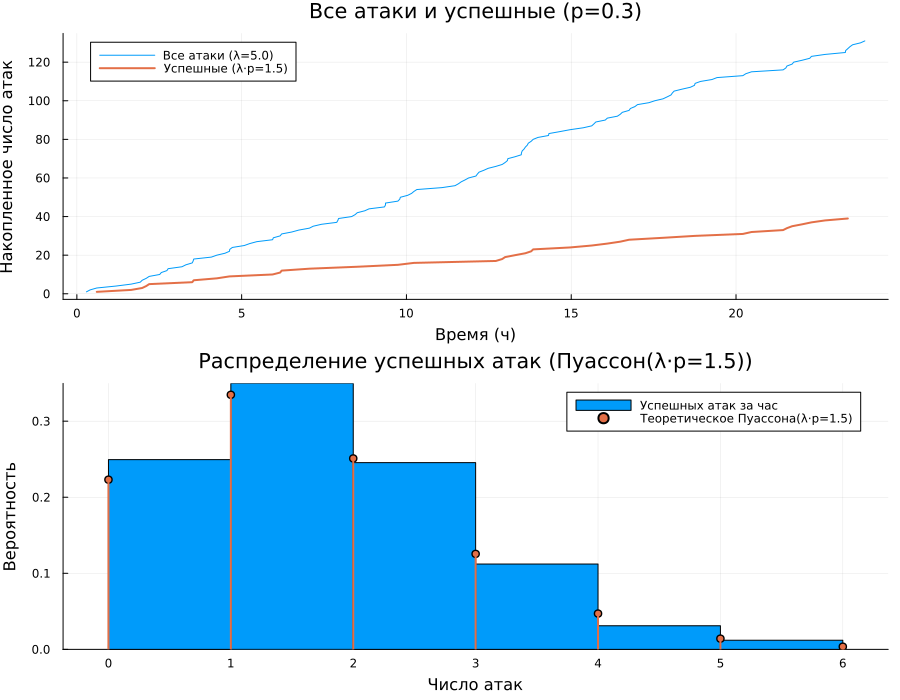
Сформирована структура рабочего пространства на основе DrWatson с разделением исходных кодов, данных и документации.
Реализована симуляция пуассоновского потока атак двумя способами: почасовые счётчики и точные моменты через экспоненциальные интервалы.
Выполнен статистический анализ: гистограммы, накопленный график, QQ-plot подтверждают соответствие теоретическим распределениям.
Проведено параметрическое исследование: при росте λ от 2 до 15 вероятность P(>10) возрастает от ~0 до ~0.88.
Исследована сходимость оценки вероятности редкого события: для надёжной оценки при λ=5 необходим объём выборки порядка 10 000–100 000 часов.
Из литературного кода автоматически сгенерированы три формата: чистый скрипт, Jupyter Notebook и документ Quarto.